|
Roda JC - SC Heerenveen (1-0) 24 februari 2007
|
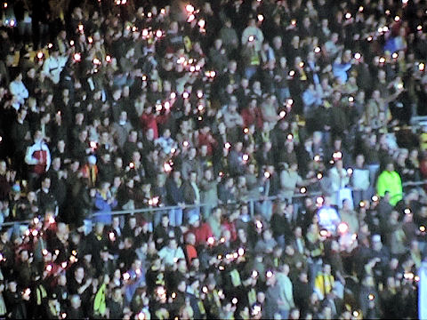
Honderden flikkersterren op west.
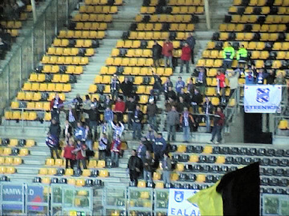
Heerenveen had weinig supporters mee.
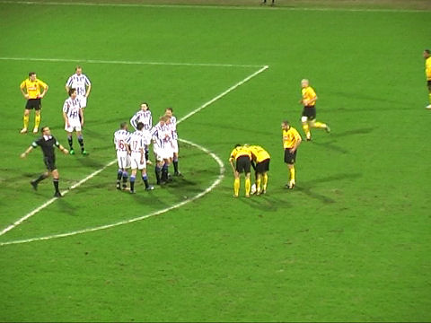
Het eerste kwartier is Heerenveen de dominerende ploeg, waarna het gelijkop
gaat.
Deze vrije trap wordt uiteindelijk door Ramzi genomen wiens prima schot door
doelman Vandenbussche weggestompt wordt.
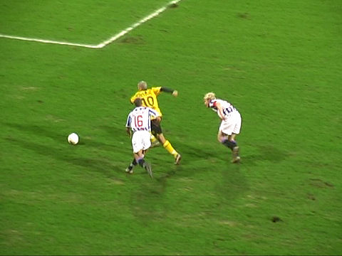
Ramzi worstelt zich door de Heerenveen-defensie en wordt daarbij door Zuiverloon
onderuitgehaald.
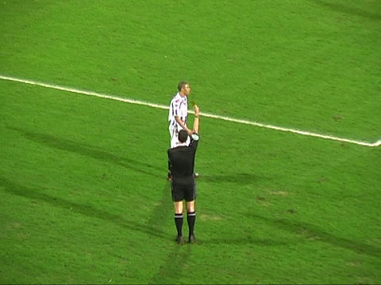
De redelijk fluitende Van Dongen trekt daar geel voor.
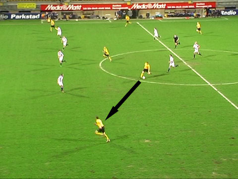
Prima pass van De Jong op Oper.
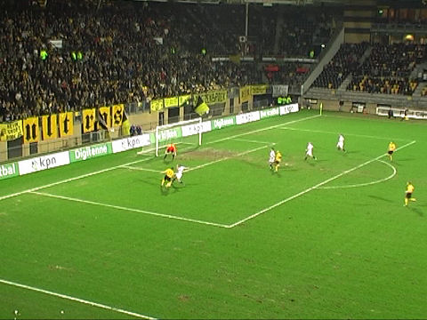
Oper kapt Zuiverloon uit....
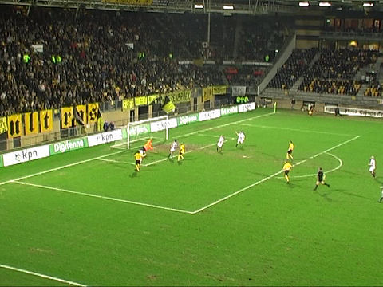
... en knalt de bal vervolgens schitterend in het dak van de joooooooooooooooool
!!!! 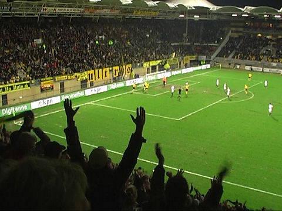
Roda JC - SC Heerenveen: 1-0: Andres Oper, (43').
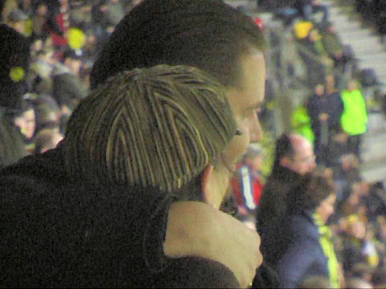
Dat dit het libido doet stijgen is bij deze onomstotelijk bewezen.
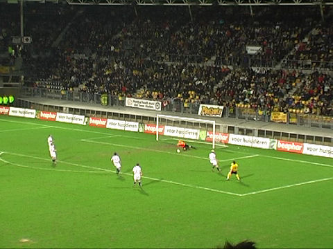
Van Tornhout met een veel te zwak schot op Vandenbussche.
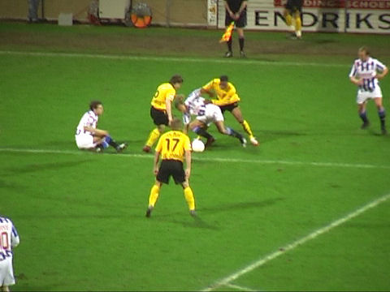
Een vermakelijk stukje flipperkastvoetbal.
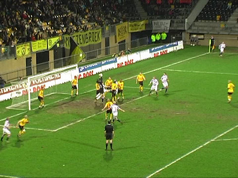
Roda heeft al een halve eeuw niet meer gescoord uit een hoekschop, maar het is
verademend dat de tegenstander dat ook niet doet.
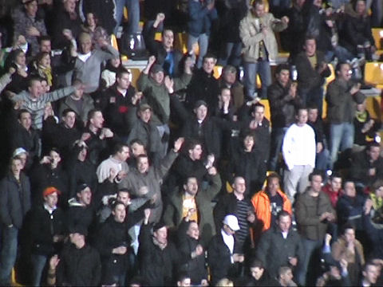
Het sfeercomité op W3 in interactie met zuid.
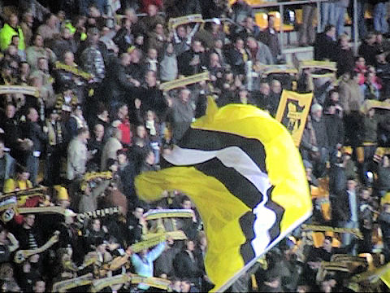
Na de 3 min. extra tijd breekt de vreugde-explosie pas echt uit: Roda staat 6e!
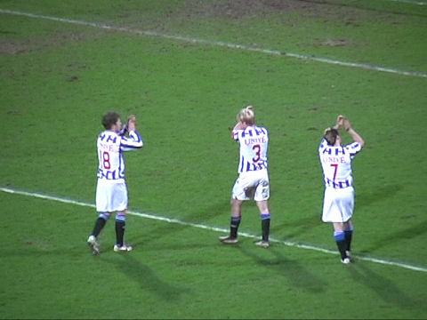
De leeggeknokte spelers tonen hun respect naar de meegereisde supporters.
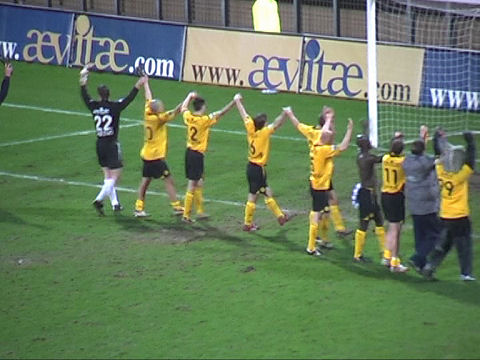
Hey, hey, hey....
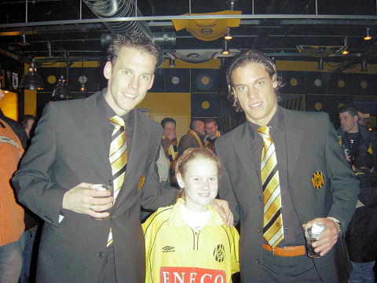
Wow.... met Saeijs en Rompelberg op de foto !!
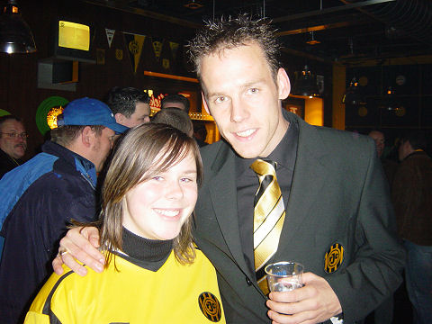
Alom blijde gezichten in de Kickoff.
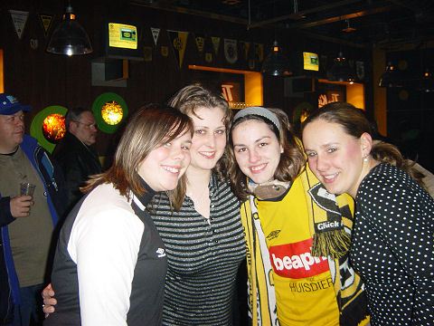
Rodarebels.
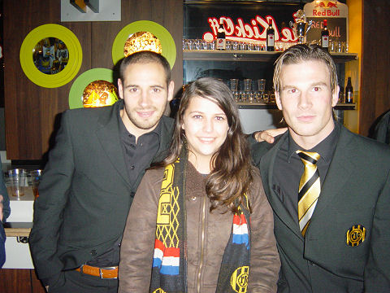
Rodagirl Mandy met Bodor en Van Tornhout.
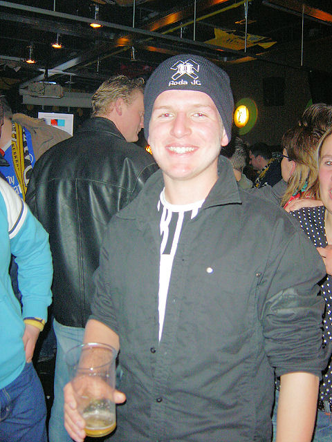
De "wollen" muts van de Ultra's blijkt nep: een inspectie van dit 8 euro 50
kostende
kleinood wijst uit dat het hier om 100% acryl gaat. Foei!
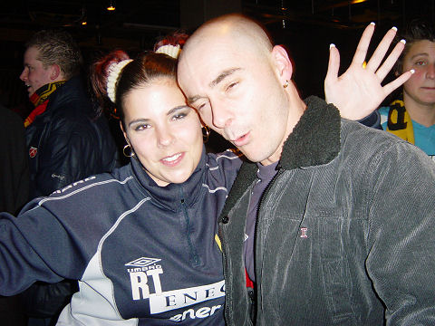
He he, eindelijk een vriendin voor Roland gevonden....
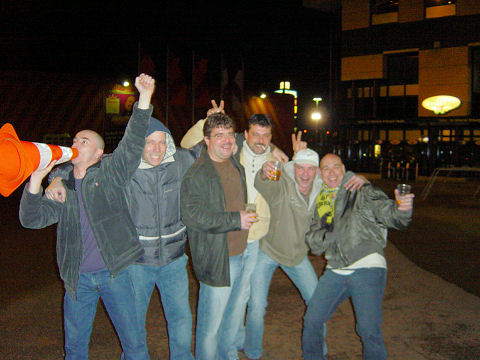
Einde van een gezellige avond. Groetjes aan SANDRA !!
© Koempels Pleasure Dome
|